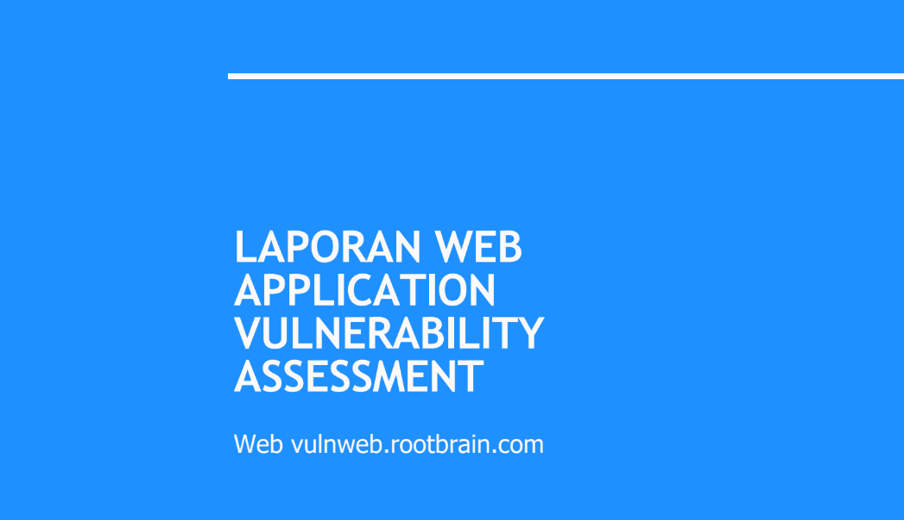
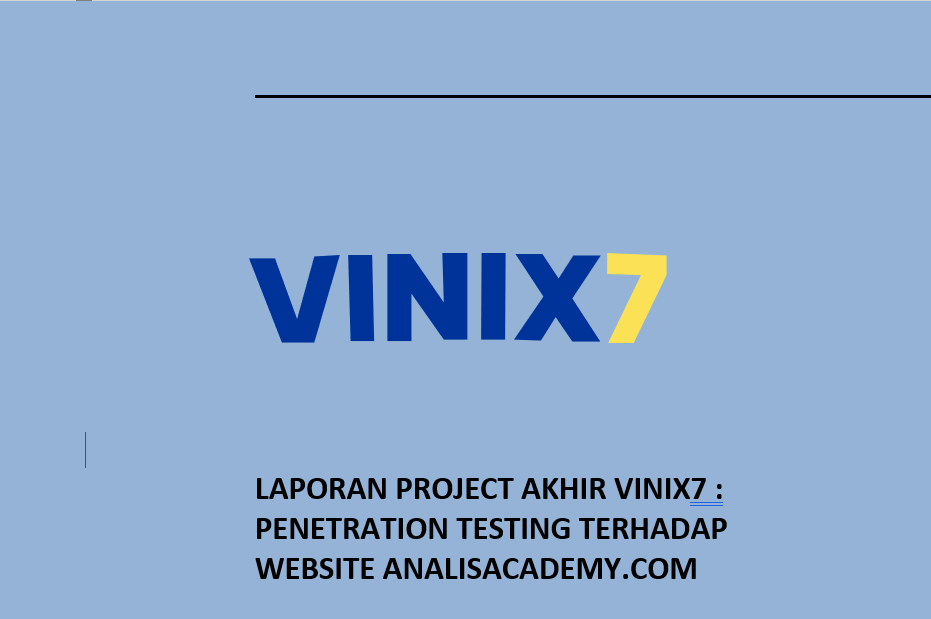
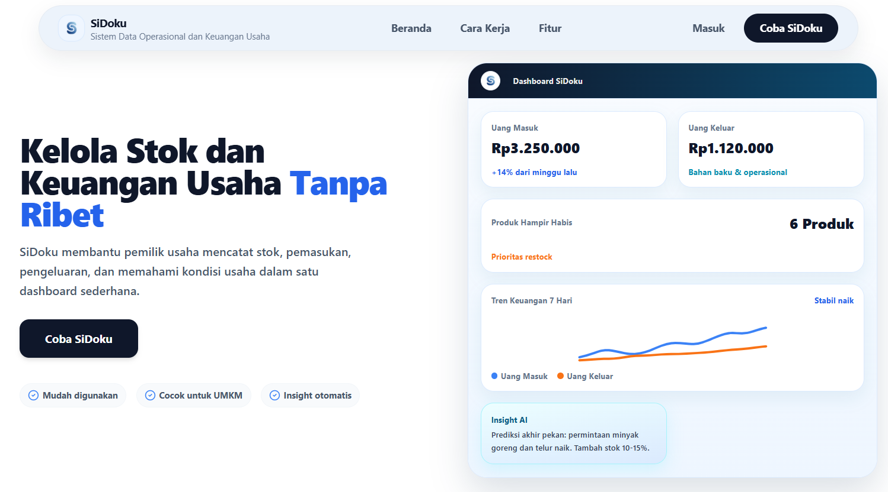
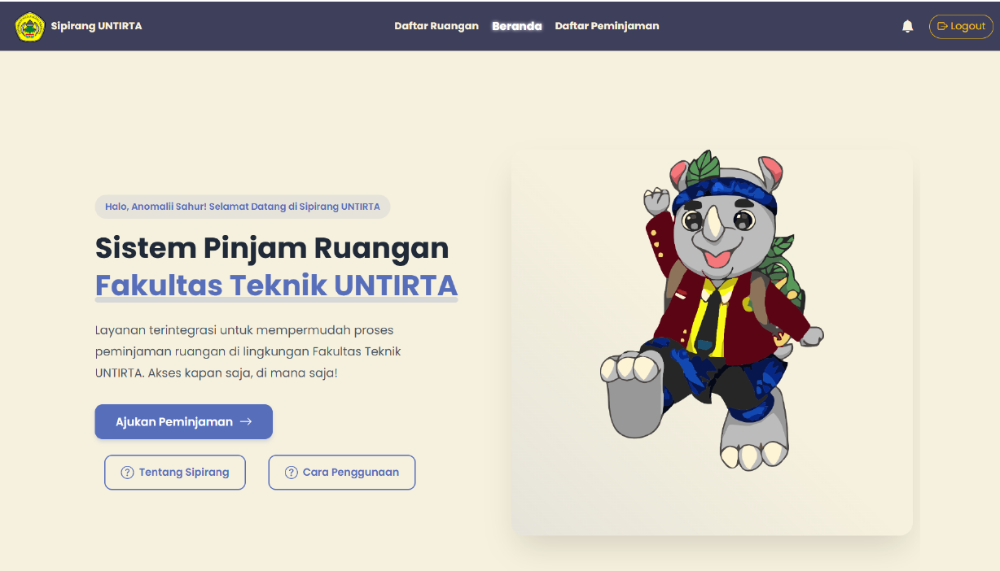

Aug 2023 — Present
Universitas Sultan Ageng Tirtayasa
Informatics
Undergraduate student with an interest in artificial intelligence, cybersecurity, software development, and information technology.
Hi, I'm
Final-year Informatics student at Universitas Sultan Ageng Tirtayasa with an interest in Cybersecurity, Networking, and Artificial Intelligence. I enjoy learning through practical projects, technical analysis, and documentation.
I am a final-year Informatics student who enjoys learning and exploring technology through hands-on projects. My interests include Cybersecurity, Networking & IT Support, and Artificial Intelligence.
Through academic projects, and independent learning, I have gained experience in network analysis, security assessment, machine learning, and web application development. I enjoy understanding how systems work, solving technical problems, and turning what I learn into practical projects.
I am always looking for opportunities to expand my technical skills, gain real-world experience, and learn from new challenges in the technology field.
Undergraduate student with an interest in artificial intelligence, cybersecurity, software development, and information technology.
Programs and learning experiences that have helped me develop practical technical skills.
Learning program focused on artificial intelligence, machine learning, and deep learning, including data processing, model development, and practical AI projects.
Independent study program focused on cybersecurity engineering, including cloud security risk assessment, threat modeling, penetration testing, secure infrastructure implementation across enterprise environments, and security tools.
Learning program focused ON network security defense, access control, cryptography, and endpoint protection through Cisco NetAcad's cybersecurity curriculum.
A selection of academic and personal projects across AI, cybersecurity, and web development.

Performed a web application vulnerability assessment using Arachni Framework, identifying 26 scanner-detected security issues across SQL Injection, Code Injection, XSS, security headers, and other findings. Manually verified two Blind SQL Injection findings using sqlmap and documented the assessment results, evidence, impact, and remediation guidance.
View Project
A final project from the VINIX7 Independent Study Program focused on penetration testing of the Analisacademy.com website to identify and analyze potential web application vulnerabilities. The project involved automated scanning, manual testing, and Proof of Concept (PoC) validation.
My contribution included preparing Chapter 2 and Chapter 3 of the report, organizing and refining the report structure and formatting, and conducting a PoC for an HTTP 500 Internal Server Error found on the /contact endpoint.
View Project
SiDoku (Operational Data and Business Financial System) is a web-based application designed to help Micro, Small, and Medium Enterprises (MSMEs) manage their business operations in an integrated manner.
Contributed to the initial system planning by defining application flows, features, and requirements, and creating flowcharts to communicate the system design with the development team. Designed and trained a sales forecasting model using a Global Multivariate GRU architecture, evaluated model performance, exported production-ready artifacts, and built an end-to-end inference pipeline.
View ProjectImplementation of animal image classification using Deep Learning with a Convolutional Neural Network (CNN) architecture based on MobileNetV2 transfer learning using TensorFlow and Keras.
View ProjectThis project analyzes user perception of the application based on public reviews, while also comparing deep learning (LSTM) and classical machine learning (SVM, Logistic Regression) approaches to automatically classify review sentiment.
View Project
A Laravel-based room reservation system developed to simplify the process of borrowing and managing rooms within the Faculty of Engineering at Universitas Sultan Ageng Tirtayasa (UNTIRTA). The system was designed to streamline room booking workflows, manage user roles, and provide better visibility of room schedules and booking requests.
My contribution focused on backend development, including user role management, booking workflows, confirmation and notification features, calendar-based schedule checking, CSV data export, and application testing. I also helped adapt room and building data to project requirements and provided recommendations for feature and UI improvements.
View ProjectBurp Suite, Nessus, Arachni, Wireshark, Kali Linux, Vulnerability Assessment, Web Security
Python, TensorFlow, Keras, Pandas, NumPy, Machine Learning, Time Series, GRU, NLP
Cisco Packet Tracer, LAN, Routing
HTML, CSS, JavaScript, PHP, Laravel, Bootstrap, MySQL, Git
Interested in my work or want to connect? Feel free to reach out through any of the platforms below.